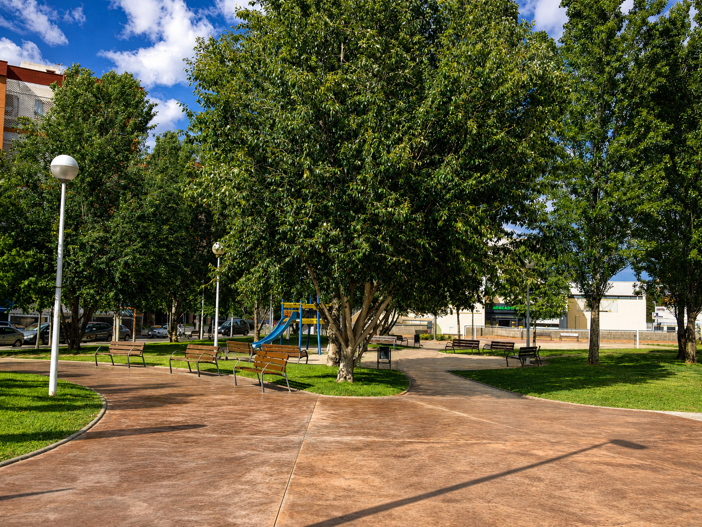
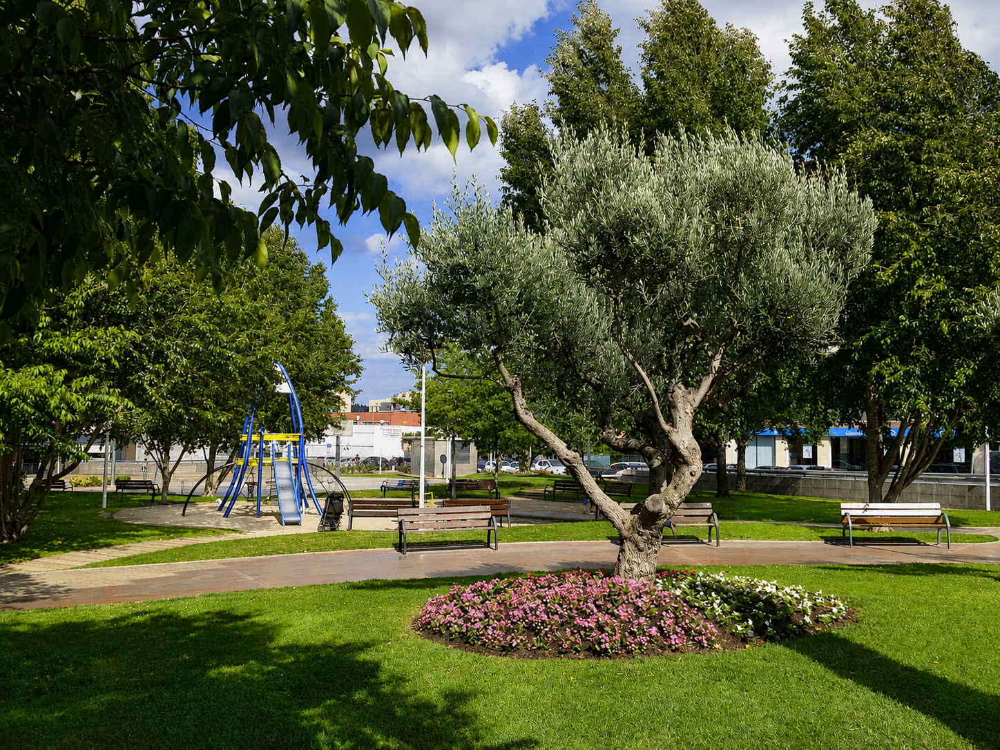
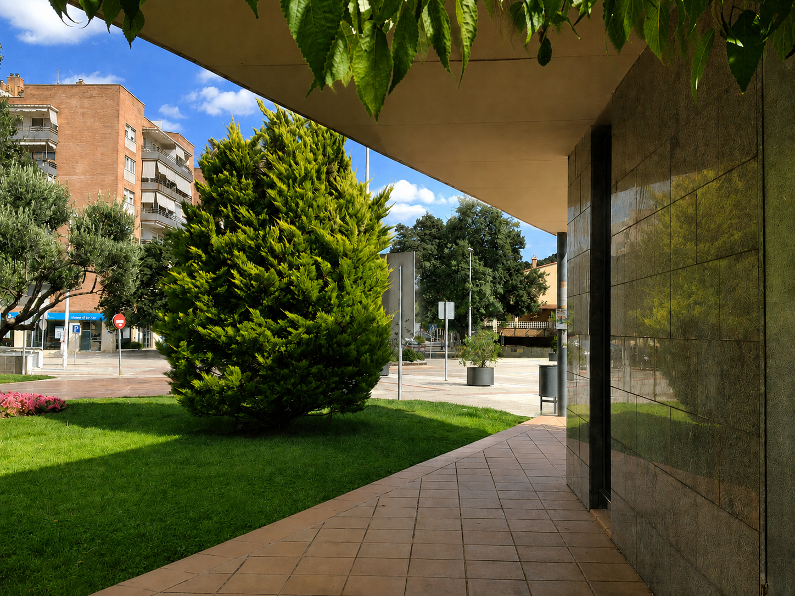
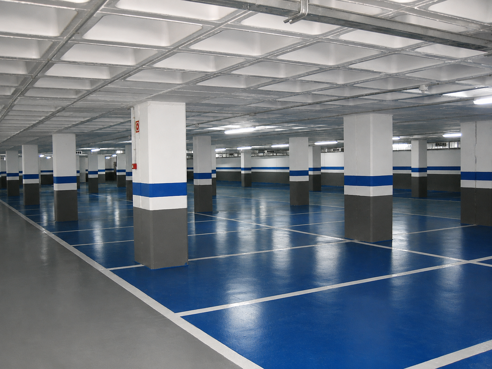
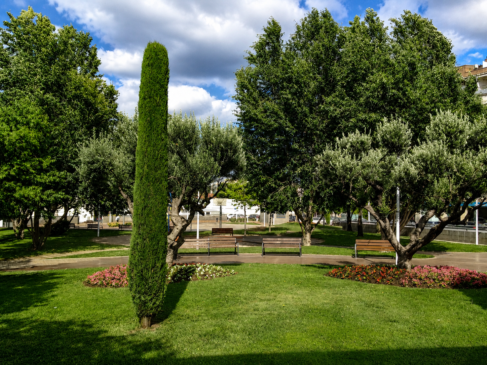
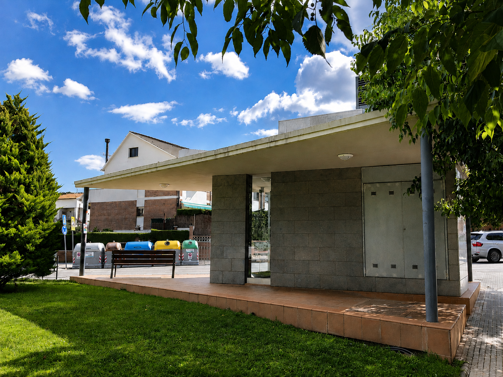
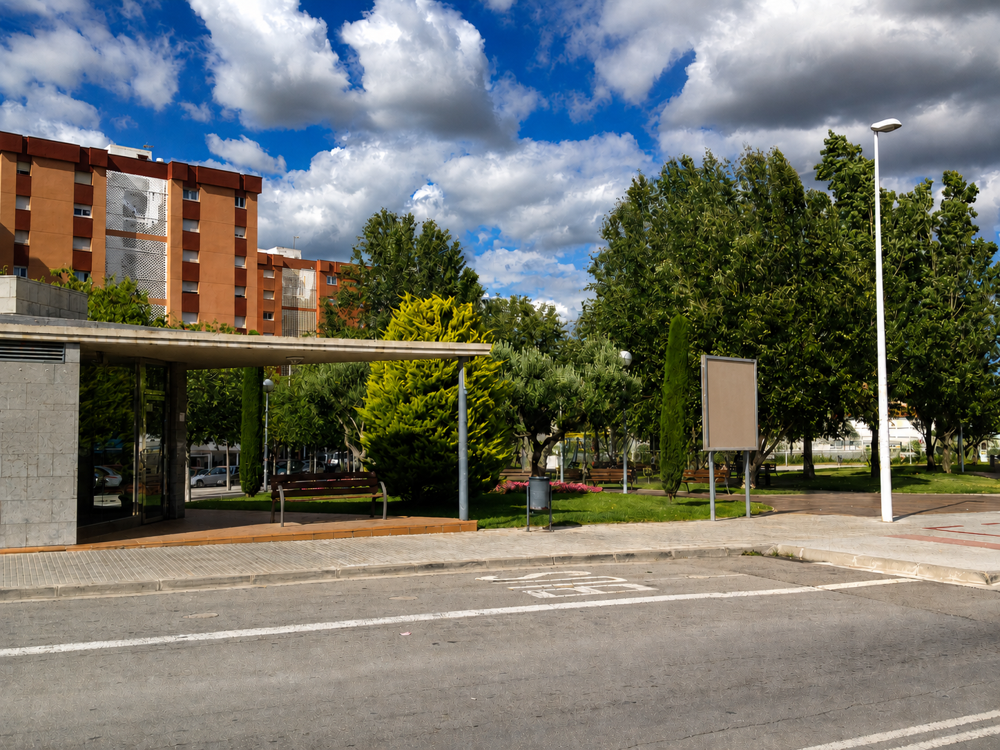

A public car park and green square that connect neighbourhoods and meet an urban need.
Project for a public car park and the landscaping of a green square, creating a connection between neighbourhoods and a functional response to a parking need.






